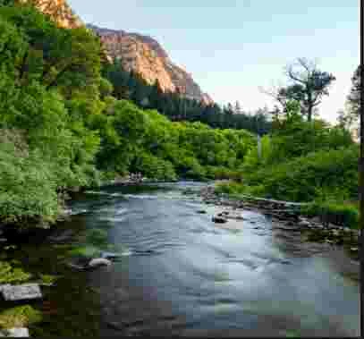

Images
 Logo image used in header.
Logo image used in header.
Sample photo for Water background.
Fonts
Roboto font used throughout the project via Google Fonts.
Other Resources
All other icons, code snippets, and third-party resources have been properly attributed in this section.